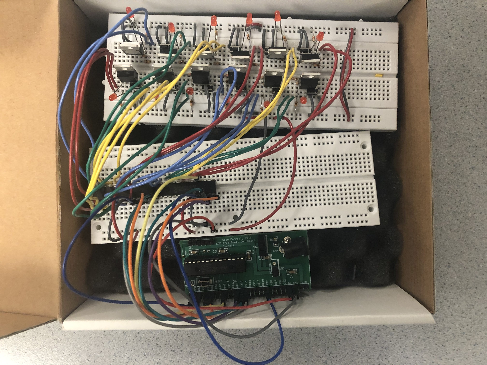

Results
Throughout the course of this final project, we documented every major stage in our development process and submitted weekly progress reports. The first week working on our project mainly involved doing a lot of research on how we could feasibly modify the arcade stick. This week involved a lot of planning and roadmap setting so we were sure we could complete the project by the deadline. After considering the pros and cons of using a shift register to make multiple IO pins for recording and playing back our circuit as compared to just using a port expander, we finally agreed on using a Port Expander to make more pins to use for reading and writing our buttons. This is because of multiple factors. Firstly, we would have to write an entirely new library, or learn how to use an existing library for the shift register, which could take a week or longer. The port expander code we used in the course is already proven to work, and we can edit the library as needed to support multiple port expanders, which is what we ended up doing for the lab. Before doing this, we also confirmed that the joystick directional inputs were digital so we wouldn't need to use an ADC for our project.
The following two weeks were spent working on basic code for recording button presses for our circuit, as well as working on a small circuit (See Figure 1) to test recording and playing back inputs. We came across many hardware and software bugs, the most notable of them being the record and playback code not working properly. This came in the form of the LEDs staying lit up sometimes, or the series of button presses just not playing back. After careful debugging and checking our connections to the port expander, we were finally able to resolve the issue.
The next major milestone was to build the final circuit (Fig 2). This was likely the most debugging-intensive part of the final project. After building the final circuit, we would observe a lot of strange behavior of the LEDs. This was a combination of the LEDs staying on when they weren't supposed to, LEDs dimming, and LEDs not responding as expected when the button was being pressed. After some discussion with the course instructor, we decided to replicate the circuit on a protoboard. This also did nothing to solve the issue. After careful deliberation, we decided to review the schematic, and discovered that there were some disconnected pins to the port expander. After connecting these, and some light debugging of the record and playback code, as well as writing an entirely new library for the second port expander, we were finally able to read from and write to the port expanders, and tested this with simple code that would blink all the LEDs in our circuit.
Now that we were finished with most of the code, it was time to wire everything to the arcade stick. This was a relatively simple endeavor, and once we had connected them all, we tried to record and playback input and visualize it using the fighting game. We noticed that it would record and playback correctly, but we would playback the wrong buttons. This required a simple, but somewhat tedious fix, as we would need to make sure all the connections to the buttons were correct and most importantly, consistent with our code. The final product is as shown below (All wires go under the Arcade Stick!).